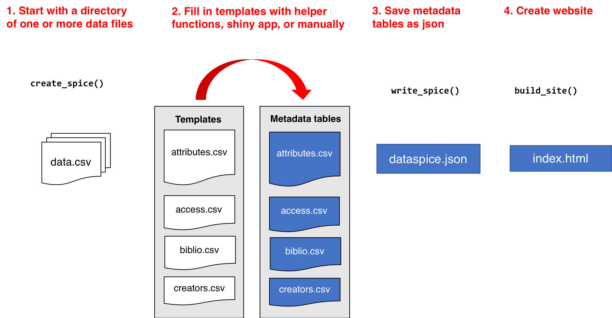
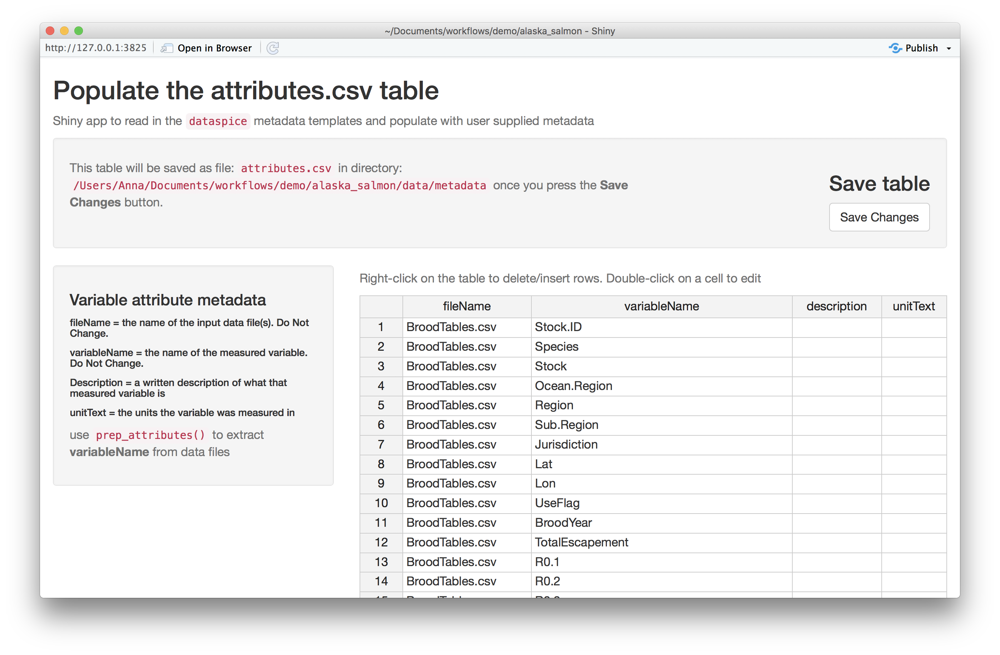
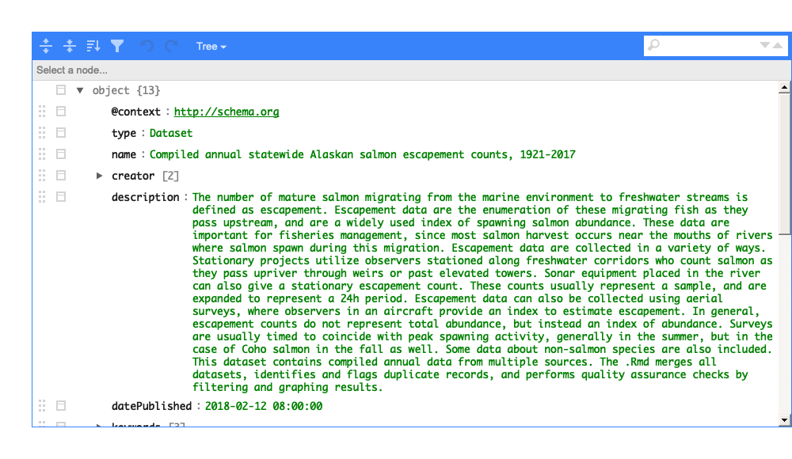
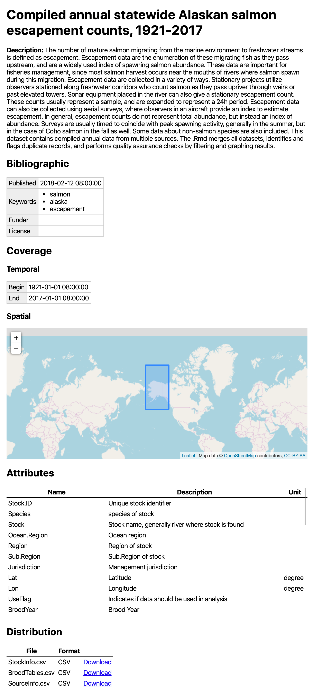

The goal of dataspice is to make it easier for researchers to create basic, lightweight, and concise metadata files for their datasets by editing the kind of files they’re probably most familiar with: CSVs. To spice up their data with a dash of metadata. These metadata files can then be used to:
- Make useful information available during analysis.
- Create a helpful dataset README webpage for your data similar to how pkgdown creates websites for R packages.
- Produce more complex metadata formats for richer description of your datasets and to aid dataset discovery.
Metadata fields are based on Schema.org/Dataset and other metadata standards and represent a lowest common denominator which means converting between formats should be relatively straightforward.
Example
A fully worked example can be found here and a live preview of the output here. An example of how Google sees this can be found here.
Workflow
create_spice()
# Then fill in template CSV files, more on this below
write_spice()
build_site() # Optional
Create spice
create_spice() creates template metadata spreadsheets in a folder (by default created in the data folder in the current working directory).
The template files are:
- biblio.csv - for title, abstract, spatial and temporal coverage, etc.
- creators.csv - for data authors
- attributes.csv - explains each of the variables in the dataset
- access.csv - for files, file types, and download URLs (if appropriate)
Fill in templates
The user needs to fill in the details of the four template files. These csv files can be directly modified, or they can be edited using either the associated helper function and/or Shiny app.
Helper functions
prep_attributes()populates thefileNameandvariableNamecolumns of theattributes.csvfile using the header row of the data files.prep_access()populates thefileName,nameandencodingFormatcolumns of theaccess.csvfile from the files in the folder containing the data.
To see an example of how prep_attributes() works, load the data files that ship with the package:
data_files <- list.files(system.file("example-dataset/", package = "dataspice"),
pattern = ".csv",
full.names = TRUE)This function assumes that the metadata templates are in a folder called metadata within a data folder.
attributes_path <- file.path("data", "metadata", "attributes.csv")Using purrr::map(), this function can be applied over multiple files to populate the header names
data_files %>%
purrr::map(~ prep_attributes(.x, attributes_path),
attributes_path = attributes_path)The output of prep_attributes() has the first two columns filled out:
| fileName | variableName | description | unitText |
|---|---|---|---|
| BroodTables.csv | Stock.ID | NA | NA |
| BroodTables.csv | Species | NA | NA |
| BroodTables.csv | Stock | NA | NA |
| BroodTables.csv | Ocean.Region | NA | NA |
| BroodTables.csv | Region | NA | NA |
| BroodTables.csv | Sub.Region | NA | NA |
Shiny helper apps
Each of the metadata templates can be edited interactively using a Shiny app:
-
edit_attributes()opens a Shiny app that can be used to editattributes.csv. The Shiny app displays the currentattributestable and lets the user fill in an informative description and units (e.g. meters, hectares, etc.) for each variable. -
edit_access()opens an editable version ofaccess.csv -
edit_creators()opens an editable version ofcreators.csv -
edit_biblio()opens an editable version ofbiblio.csv

Remember to click on Save when finished editing.
Completed metadata files
The first few rows of the completed metadata tables in this example will look like this:
access.csv has one row for each file
| fileName | name | contentUrl | encodingFormat |
|---|---|---|---|
| StockInfo.csv | StockInfo.csv | NA | CSV |
| BroodTables.csv | BroodTables.csv | NA | CSV |
| SourceInfo.csv | SourceInfo.csv | NA | CSV |
attributes.csv has one row for each variable in each file
| fileName | variableName | description | unitText |
|---|---|---|---|
| BroodTables.csv | Stock.ID | Unique stock identifier | NA |
| BroodTables.csv | Species | species of stock | NA |
| BroodTables.csv | Stock | Stock name, generally river where stock is found | NA |
| BroodTables.csv | Ocean.Region | Ocean region | NA |
| BroodTables.csv | Region | Region of stock | NA |
| BroodTables.csv | Sub.Region | Sub.Region of stock | NA |
biblio.csv is one row containing descriptors including spatial and temporal coverage
| title | description | datePublished | citation | keywords | license | funder | geographicDescription | northBoundCoord | eastBoundCoord | southBoundCoord | westBoundCoord | wktString | startDate | endDate |
|---|---|---|---|---|---|---|---|---|---|---|---|---|---|---|
| Compiled annual statewide Alaskan salmon escapement counts, 1921-2017 | The number of mature salmon migrating from the marine environment to freshwater streams is defined as escapement. Escapement data are the enumeration of these migrating fish as they pass upstream, … | 2018-02-12 08:00:00 | NA | salmon, alaska, escapement | NA | NA | NA | 78 | -131 | 47 | -171 | NA | 1921-01-01 08:00:00 | 2017-01-01 08:00:00 |
creators.csv has one row for each of the dataset authors
| id | name | affiliation | |
|---|---|---|---|
| NA | Jeanette Clark | National Center for Ecological Analysis and Synthesis | jclark@nceas.ucsb.edu |
| NA | Rich,Brenner | Alaska Department of Fish and Game | richard.brenner.alaska.gov |
Save JSON-LD file
write_spice() generates a json-ld file (“linked data”) to aid in dataset discovery, creation of more extensive metadata (e.g. EML), and creating a website.
Here’s a view of the dataspice.json file of the example data:

Build website
-
build_site()creates a bare-bonesindex.htmlfile in the repositorydocsfolder with a simple view of the dataset with the metadata and an interactive map. For example, this repository results in this website

Convert to EML
The metadata fields dataspice uses are based largely on their compatibility with terms from Schema.org. However, dataspice metadata can be converted to Ecological Metadata Language (EML), a much richer schema. The conversion isn’t perfect but dataspice will do its best to convert your dataspice metadata to EML:
library(dataspice)
# Load an example dataspice JSON that comes installed with the package
spice <- system.file(
"examples", "annual-escapement.json",
package = "dataspice")
# Convert it to EML
eml_doc <- spice_to_eml(spice)
#> Warning: variableMeasured not crosswalked to EML because we don't have enough
#> information. Use `crosswalk_variables` to create the start of an EML attributes
#> table. See ?crosswalk_variables for help.
#> You might want to run EML::eml_validate on the result at this point and fix what validations errors are produced.You will commonly need to set `packageId`, `system`, and provide `attributeList` elements for each `dataTable`.You may receive warnings depending on which dataspice fields you filled in and this process will very likely produce an invalid EML record which is totally fine:
library(EML)
eml_validate(eml_doc)
#> [1] FALSE
#> attr(,"errors")
#> [1] "Element '{https://eml.ecoinformatics.org/eml-2.2.0}eml': The attribute 'packageId' is required but missing."
#> [2] "Element '{https://eml.ecoinformatics.org/eml-2.2.0}eml': The attribute 'system' is required but missing."
#> [3] "Element 'dataTable': Missing child element(s). Expected is one of ( physical, coverage, methods, additionalInfo, annotation, attributeList )."
#> [4] "Element 'dataTable': Missing child element(s). Expected is one of ( physical, coverage, methods, additionalInfo, annotation, attributeList )."
#> [5] "Element 'dataTable': Missing child element(s). Expected is one of ( physical, coverage, methods, additionalInfo, annotation, attributeList )."This is because some fields in dataspice store information in different structures and because EML requires many fields that dataspice doesn’t have fields for. At this point, you should look over the validation errors produced by EML::eml_validate and fix those. Note that this will likely require familiarity with the EML Schema and the EML package.
Once you’re done, you can write out an EML XML file:
Convert from EML
Like converting dataspice to EML, we can convert an existing EML record to a set of dataspice metadata tables which we can then work from within dataspice:
library(EML)
eml_path <- system.file("example-dataset/broodTable_metadata.xml", package = "dataspice")
eml <- read_eml(eml_path)
# Creates four CSVs files in the `data/metadata` directory
my_spice <- eml_to_spice(eml, "data/metadata")Resources
A few existing tools & data standards to help users in specific domains:
- Darwin Core
-
Ecological Metadata Language (EML) (&
EML) - ISO 19115 - Geographic Information Metadata
- ISO 19139 - Geographic Info Metadata XML schema
- Minimum Information for Biological and Biomedical Investigations (MIBBI)
…And others indexed in Fairsharing.org & the RDA metadata directory.